Take-home Exercise 1
0.0 The Task
Age-sex pyramid is an analytical visualisation commonly used by demographers to reveal the structure of population by gender and age group. In this take-home exercise, you are required to reveal the demographic structure of Singapore at planning area level by using age-sex pyramid method. Instead of plotting a single age-sex pyramid, however, you are required to display nine selected planning areas on a single view by using trellis display (also know as small-multiple plot).
You can fund the links to download the dataset below:
1.0 Age-sex Pyramid in 9 Selected Area using Trellis Display
1.1 Sketch of Proposed Design
For 1 single sheet:
.png)
1.2 Clarity
Content: The proposed design used male and female population, age group and location. We need to calculate the individual population using the total population by ourselves.
X-axis: The x-axis should has the same scale for every plots.
Y-axis: It shows the different age groups.
Legend: In the legend I put the percentage of total population.
1.3 Aesthetics
Choose of color palette
The pink color is often associate with women, hence I use pink color for female population to give audience a better understanding.
1.4 Proposed Visualization on Tableau
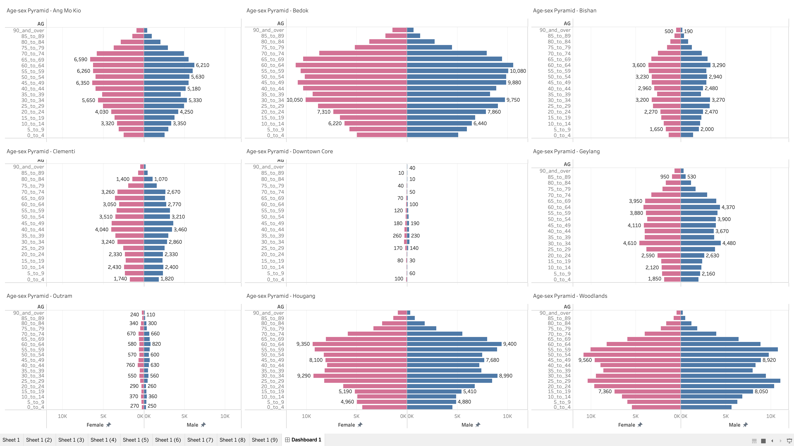
2.0 Step-by-step Preparation
| No. | Step | Action |
|---|---|---|
| 1 | Load the CSV file into Tableau | 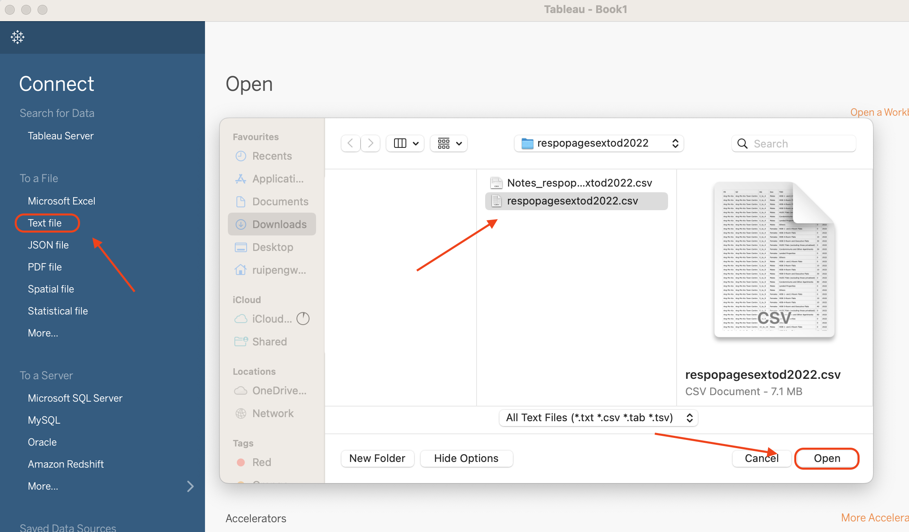 |
| 2 | Go to sheet 1 tab and create calculation field for Population | 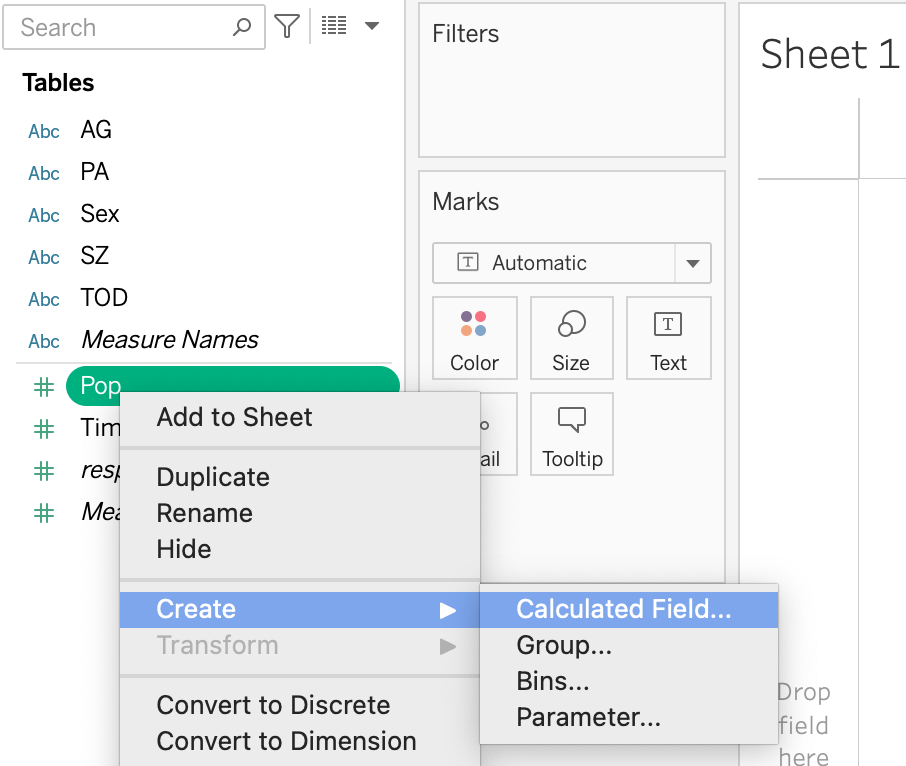 |
| 3 | Add the query and filter out the population for both Male and Female. | 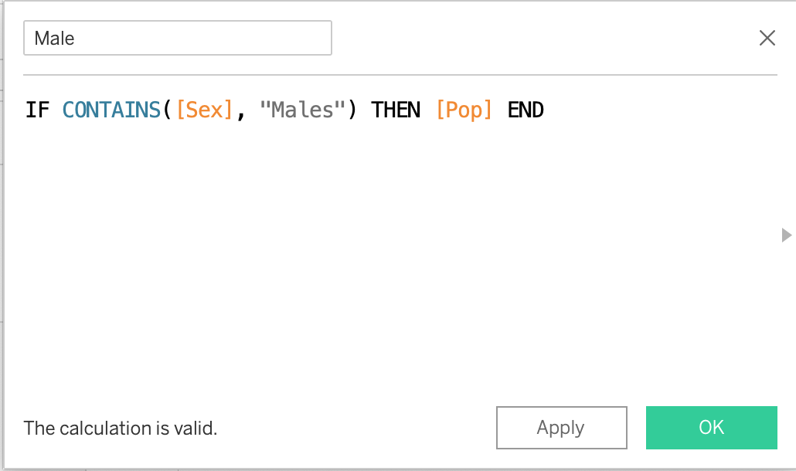 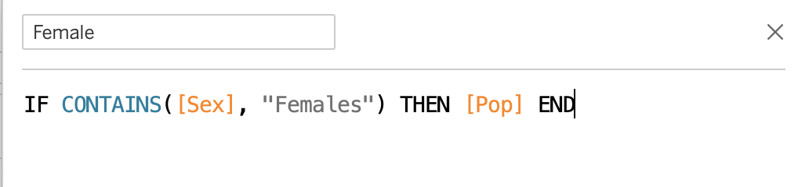 |
| 4 | Drag Age to the rows and 2 population to the columns. | 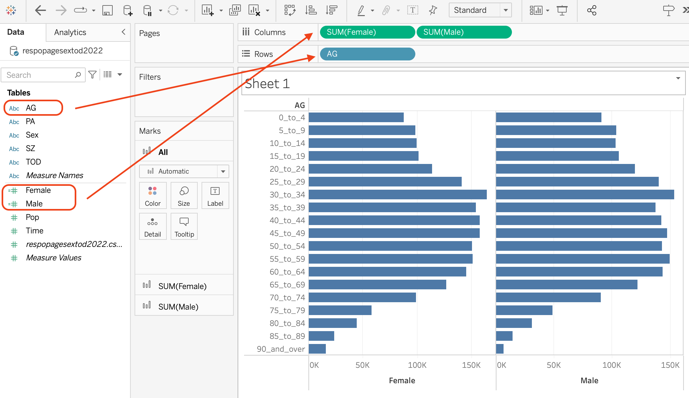 |
| 5 | Drag PA to the filters, and select Ang Mo Kio. | 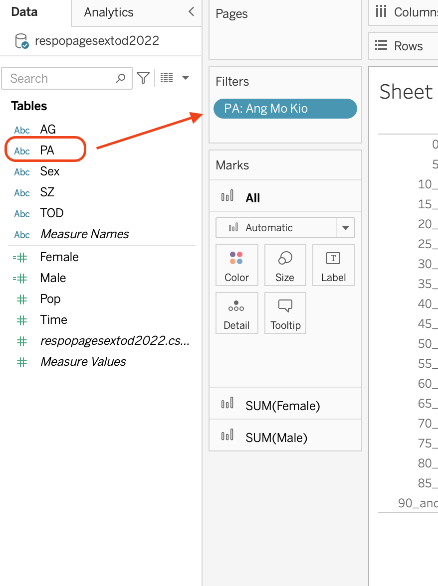 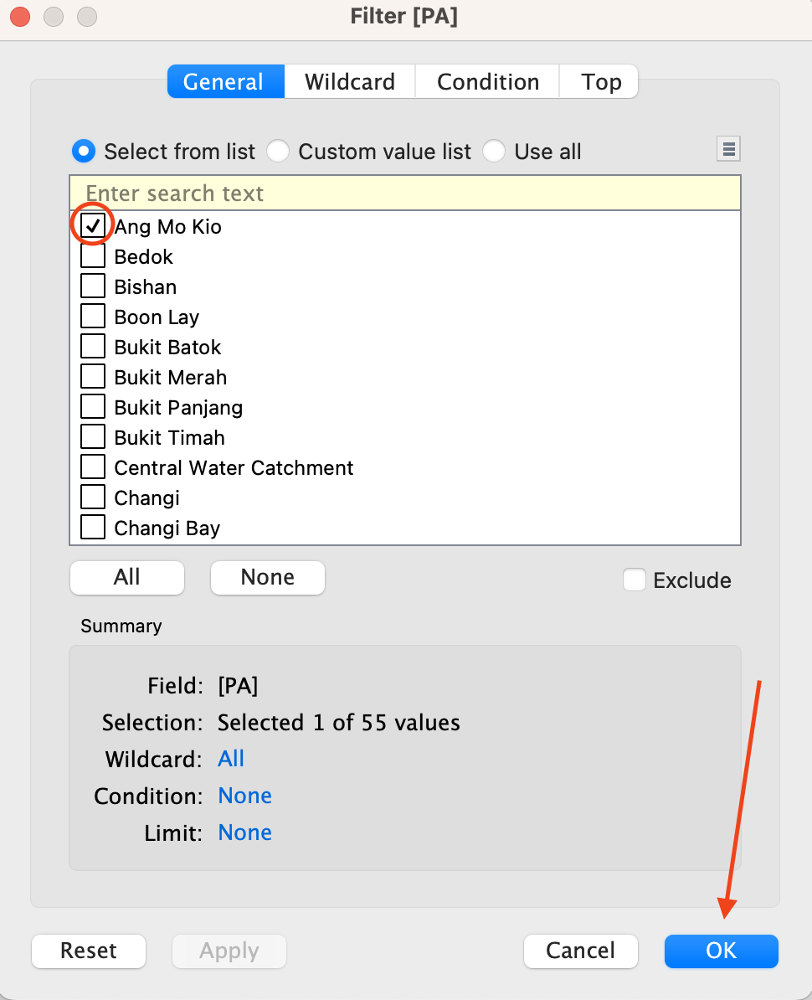 |
| 6 | Edit Axis of Female. Check reversed for Female and change the tick interval to fixed 1,000 under tick marks tab. | 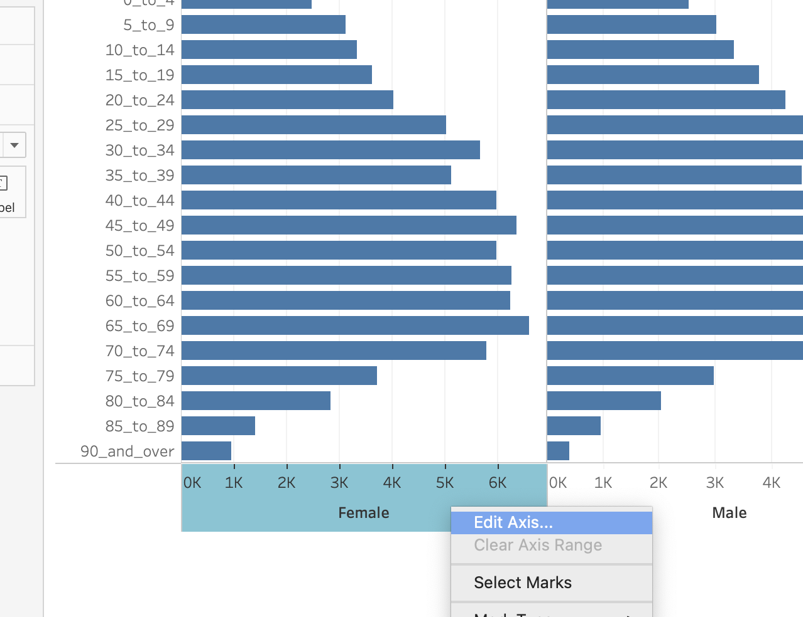 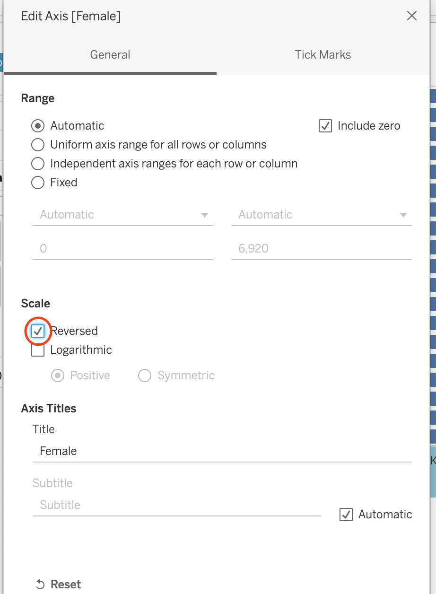 |
| 7 | Change the bar color for female and add label for both female and male. Then sort the y-axis in descending order. | 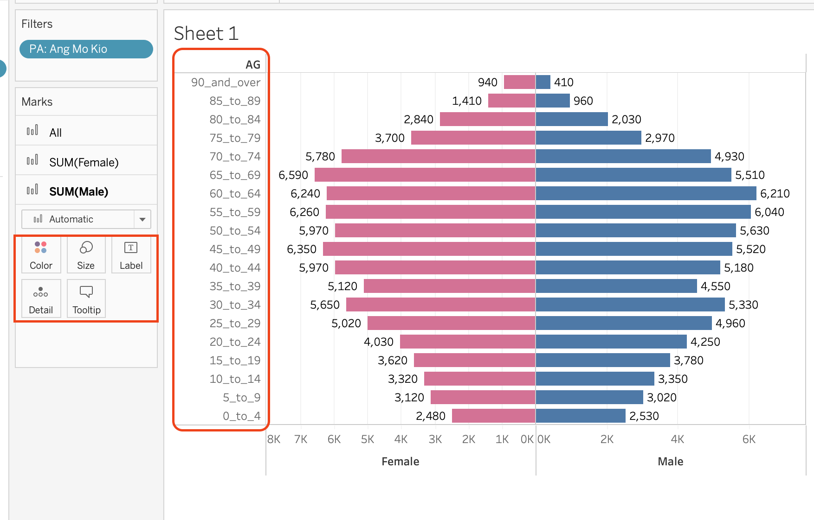 |
| 8 | Change the Title to the dynamic format of location. | 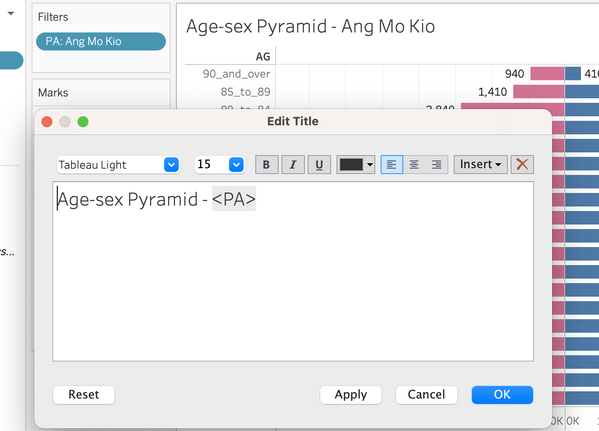 |
| 9 | Duplicate the sheet 9 times and change the location filter | 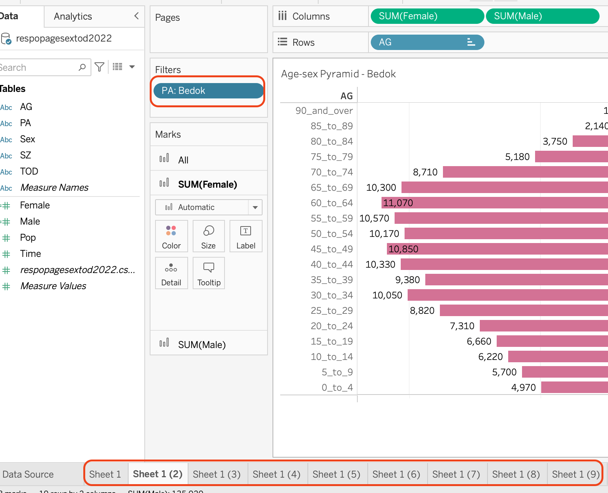 |
| 10 | Create the dashboard |
3.0 Insights From Visualization
From the 9 plots, first, we can see that Singapore has lower percentage of young people. This shows that the next two decades will usher in an aging society. Second, we can see that in the common resident area, age 60-64 is the primary group which has most population, however in downtown area, age 35-39 are the major group, which represents the people in this aging group earns more.